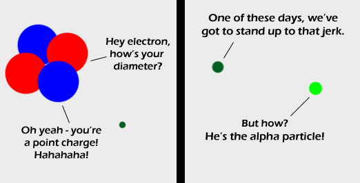

Comic JK 424
When I Feel Like It
⇤
<
?
>
⇥

⇤
<
?
>
⇥
Forum
.
RSS
.
Digg
.
Facebook
.
Reddit
.
Twitter
.
Stumbleupon
Enter your thoughts on number 424 here. Please, no spamming, trolling, or phreaking. i don't even want to be able to get this. Social Sciences rule!!!! >Wow this is like grade 10-11 physics dude >>Social Science? Isn't that an oxymoron? I've seen your 'qualitative' research :P >>>Willful ignorance? says a lot about SS Oh god... That's so punny :| >I love it! >>me too! More Chemistry! Really sets some difference to Randall Yes! Call him a helium nucleus! Maybe he'd get the hint and start acting nobly. >Nice one >>I wasn't even thinking that when I read it. WOW it's been too long since I've had a good chem class! Protons and Neutrons are not balls and a photon is much smaller than an electron. >Only if you treat electrons like they are balls. >>Which you shouldn't. >>>You have a problem with standard representation of drawing subatomic particles outside of particle physics? If you want an accurate depiction, consult your physics textbook. If you want humor, quit bitching and stick around. I really laughed out loud for this one. And a lot of the comments seem good too. > bahahahahaha XD this is brilliant. somehow comic jk makes me laugh at the worst puns :P >> Yeah me too Shouldn't that be Helium nucilus? >I didn't know Sarah Palin browsed this comic...